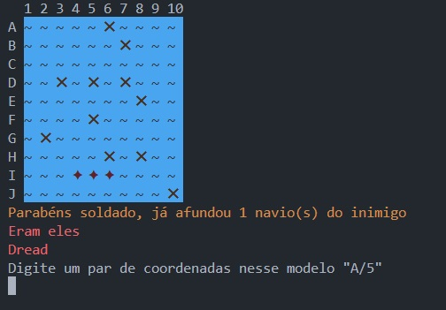
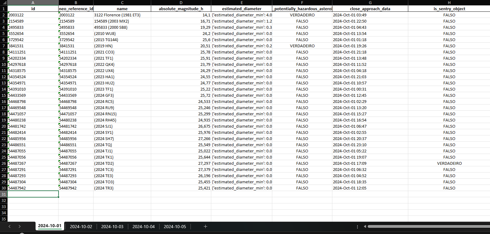

Bem-vindo ao Portfolio
Faça uma boa viagem e "Praise the sun \\o/"
Sobre Mim
Sou um desenvolvedor focado no back-end e aprendiz em análise de dados. Atualmente sou familiar com as linguagens Python, Java e Julia.
Além disso como toda a página sugere um dos meus hobbies é jogar.
Meus Projetos
Batalha Naval Single player
Um dos meus primeiros projetos (bem feitos) esse jogo funciona no terminal e posiciona os barcos de maneira aleatória no espaço. Além disso ele armazena em quantas jogadas cada pessoa conseguiu concluir o jogo. Clicando no botão abaixo você será redirecionado para o repositório desse projeto.

NEO_API
Este script Python interage com a API de Near Earth Objects(Objetos Próximos à Terra) da NASA para obter informações sobre asteroides que se aproximam da Terra dentro de um intervalo de datas especificado. Ele processa os dados e salva em um arquivo Excel, utilizando programação assíncrona para melhorar o desempenho durante as chamadas de API e processamento.

Lock in
Esse projeto consiste na utilização de RFID para operar trancas eletrônicas de maneira mais segura e inteligente. Por ainda estar em fase inicial não tenho um link de acesso.
SaaS Project
Este script Python é responsável por fazer webscrapping de usuários de um determinado site e armazenar para consultas futuras num banco de dados.